Introduction to Database Paradigms
Introduction to Database Paradigms
a workshop by Mahmoud AbdelrazekLet's talk about you
Hi there üëãüèæ
Thank you for joining this course. I hope you enjoy it.
Let's take a few minutes to talk about you.
What is your name?
This is Me

My name is Mahmoud Abdelrazek
I worked with databases here üëáüèæ
and I like to read üìñ, run üèÉüèæ, code üíª and sleep üí§
About this course
- What is a database? And when do you need to use it?
- What are the different types of database systems? And how to choose among them?
- How to think about your data using database models?
The dataset
In this course we will use Enron's emails dataset.
The dataset and more information about are available on CMU.
Chapter one
- Bob: Maybe we should use a database? ü§î
- Alice: I don't know üò∂ don't know what a database is.
You've Got Data üéâ
Once you receive a new dataset, the first step is always to inspect it or at least a sample of it visually and then conduct a quick Exploratory Data Analysis.
Some of the questions you might like to ask are:
- What is the nature of your data? text, images, DNA sequances?
- What is the data type of each column?
- How is your data structured?
Inspecting the data üëÄ

Inspecting the data üëÄ
Important attributes üì¢
But, why do you care about this dataset?
What questions are you trying to answer?
- Maybe you want to find the most active employee in the company?
- Maybe you want to find the most comman phrases in the company's communication?
- Maybe you want to understand the connections between employees inside the company?
To Database or Not to Database ❓
- What is the size of your data ? - larger than excel limit
- How often does your data change ? - it gets modified every few minutes
- Who will interact with your data ? - multiple researchers
Data Modeling & Data Engineering
Before importing your data to the database we need to engineer it to match the model of the databses management system.
We have to address the elephant in the room

PostgreSQL is an open source Database Management System
Entity Relationship Model

- An entity may be defined as a thing capable of an independent existence that can be uniquely identified.
- A relationship captures how entities are related to one another wiki
Entity Relationship Diagram

Can you think of a different way to represent the data?
The course server
Our PostgreSQL is accessible here
PG Admin interface
Find enron tables
Let's check the data

Users table
Let's check the data
Email transactions table
Let's check the data

Emails table
Find the most active day ü§∏üèæ
Find who recieved the highest count of emails üì¨
Find who was cc'd/to'd in emails the most üì•
Find who sends the most emails and receives the least üì≠
Find who sent emails about LJM the most üìÆ
Can you think of other questions to ask?
Chapter two
- Bob: How can we analyze all this text? ü§î
- Alice: I have an idea üí° we can search through it? üîé
Data Types üìä
an attribute of data which tells the computer how the programmer intends to use the data Wiki
| 3.14 | peter.keohane@enron.com | 2001-05-09 14:36:00 |
|---|---|---|
| number | string | datetime |
Data operations ⚙️
number
+ / - x
Data operations ⚙️
string
CONCAT, LEN, REPLACE, SELECT
Data operations ⚙️

True, False
Boolean
AND, OR, NOT
Data operations ⚙️
["Ford", "Volvo", "BMW"]
array
IN
Data operations ⚙️
2001-05-09 14:36:00
datetime
DATE_ADD, DATE_SUB
Data operations ⚙️
"coordinates": [125.6, 10.1]
location
DISTANCE, BUFFER
Data organization
Normalization üîó is generally used with SQL databases to reduces data redundancy and eliminates structural dependency.
Denormalization üìú is used with NoSQL database to improves read speed
Entity Relationship Model
- An entity may be defined as a thing capable of an independent existence that can be uniquely identified.
- A relationship captures how entities are related to one another wiki
Entity Relationship Diagram
Can you think of a different way to represent the data?
Document Data ModelüìÉ
Document Data ModelüìÉ
Document Data ModelüìÉ
Elasticsearch is a fast and scalable search and analytics engine.
The course server
Our Elasticsearch is accessible here
No user name nor password are required
Elasticsearch server üíΩ
Elasticsearch server üíΩ
Elasticsearch server üíΩ
Elasticsearch server üíΩ
Find a multi word phrase
Find a multi word phrase
Find a multi word phrase
Find a multi word phrase
Joins vs keywords
Joins vs keywords
Kibana Dashboards
Chapter three
- Alice: This looks like üï∏Ô∏è a network ?
- Bob: Who do you think is the center üéØ of this network?
Database Security üõ°Ô∏è
Most database management systems offer some security options on multiple levels. Depending on the system, the security can cover Transport Layer Security and Database-Level Security
Database-Level Security üõ°Ô∏è
- Roles and Permissions each user has a username and a password to access the database. Each user has their own access level to the data (view/ modify/delete)
- Row/Column Level Security access to each row or columns can be restricted in some database systems
- Auditing keeps audit trail of all the changes and states of the database system
Data validity üëåüèæ
Databases guarantee data validity by adhering to the ACID properties. ACID stands for Atomicity, Consistency, Isolation, Durability.
Data validity üëåüèæ
Atomicity: All or nothing
Consistency: One valid state to another
Isolation: Concurrently = Sequentially
Durability: Data is saved to disk
neo4j is graph database management system.
Graph Model
Graph Model
Graph Model
The course server
Our neo4j is accessible here
Graph Model vs Entity Relationship Model
One Match query
Graph Model vs Entity Relationship Model
Graph Model vs Entity Relationship Model
Two joins and one select
Centrality üéØ
Centrality is a measure of how important a node is to the graph. It can be measured using many algorithms, but here we will use the PageRank algorithm.
PageRank algorithm measures the importance of each node within the graph, based on the number incoming relationships and the importance of the corresponding source nodes. neo4j
PageRank
PageRank is introduced in the original Google paper as a function that solves the following equation:
where,
we assume that a page A has pages T1 to Tn which point to it.
d is a damping factor which can be set between 0 (inclusive) and 1 (exclusive). It is usually set to 0.85.
C(A) is defined as the number of links going out of page A.
This equation is used to iteratively update a candidate solution and arrive at an approximate solution to the same equation.
PageRank
Create the graph
PageRank
Calculate PageRank
Chapter four
- Alice: Are there any other models to explore? ü§î
- Bob: Maybe ü§∑üèæ Let's do some research üîé
Database Paradigmsüìö
what do we know so far?
Key Value Databaseüîë
Wide Column DatabaseüèúÔ∏è
Document DatabaseüìÑ
Relational Databaseüîí
Graph Databaseüï∏Ô∏è
Search Engine Databaseüîé
Multi-Model Databaseüì≥
System Designüé®
Your system can consist of more one database model
It helps to think about the questions you are trying to answer, the data nature, the resources you have and the capabilities that each software offers
Data preparationüìù
is the process of organizing the data into a structure and format that is easy to import into the database system
this can include modeling, cleaning, transforming, and enriching the data.
Data modeling
We used Entity Relationship, Document, and Graph models.
Data cleaning
This step depends entirely of the dataset, but it involves dealing with missing values and anomalies in the data
for example:
kenneth.lay@enron.com, klay@enron
Data transformation
This include extracting the attributes and exporting the data in format acceptable by the database system. we used JSON and CSV formats.
Data enrichment
This step is optional for our purpose. It involves extending the data with new features from external sources or by inferring relationships between the data.
for example:
Building this courseüöß
it is all in one command
connect with me ü§ùüèæ
You can find me as razemk on: